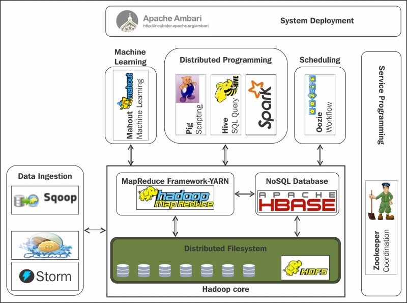
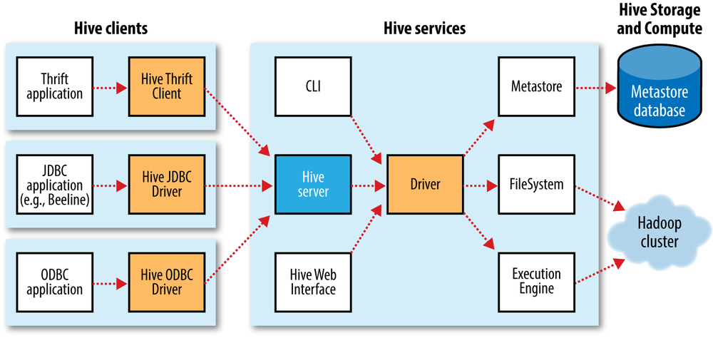
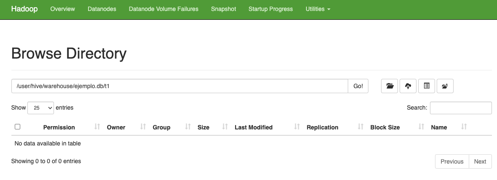
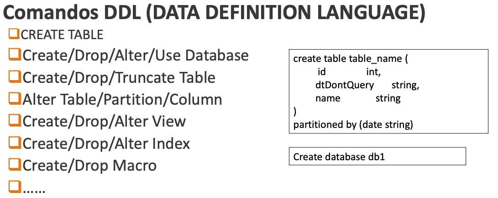
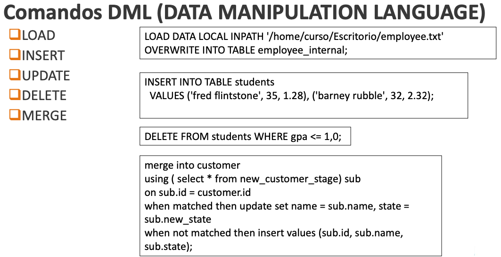
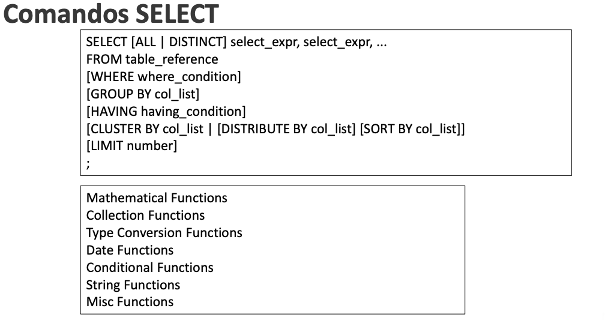
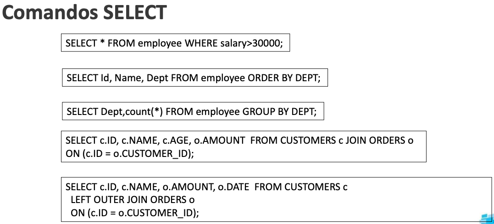

HIVE: Instalación y configuración inicial.

Herramienta desarrollada por Facebook y luego donada a la Apache Software Foundation.
Proporciona una interfaz de consulta similar a SQL (Structured Query Language) para interactuar con grandes conjuntos de datos almacenados en Hadoop Distributed File System (HDFS) o en otros sistemas de almacenamiento compatibles con Hadoop.
Funcionamiento:
- Metastore: Almacena información sobre el esquema de datos y las particiones en una base de datos relacional para facilitar la administración de metadatos.
- HQL (Hive Query Language): Los usuarios escriben consultas en un lenguaje similar a SQL llamado HQL para expresar las operaciones que desean realizar en los datos.
- Traducción a MapReduce: Las consultas HQL se traducen internamente en tareas MapReduce, que se ejecutan en un clúster Hadoop distribuido.
- Optimizaciones internas: Hive realiza optimizaciones para mejorar el rendimiento, como la eliminación de pasos redundantes y la reorganización eficiente de tareas MapReduce.
- Almacenamiento de datos: Los resultados de las consultas se almacenan en HDFS o en otros sistemas compatibles con Hadoop, organizados en tablas y en formatos específicos para un almacenamiento eficiente.
- Integración: Hive se integra con diversas herramientas en el ecosistema Hadoop, permitiendo a los usuarios utilizar diferentes herramientas según sus necesidades.
Componentes

Instalación
- Descargaremos en /usr/local la versión 2.3.9
Versión compatible con el Java 11 que tenemos instalado, con la versión 3.1.3 dará error.
https://archive.apache.org/dist/hive/hive-2.3.9/apache-hive-2.3.9-bin.tar.gz
1. Descargar en /opt/hadoop o en /usr/local dependiendo de donde hayas instalado hadoop
wget https://archive.apache.org/dist/hive/hive-2.3.9/apache-hive-2.3.9-bin.tar.gz
2. Descomprimir
3. Crear "enlace" blando llamado "hive" que apunte a la carpeta descomprimida
- Añadimos HIVE_HOME a .bashrc y modificamos el PATH
## Sustituye el path si tu instalación de hive no se encuentra en este directorio
export HIVE_HOME=/opt/hadoop/hive
export PATH=$PATH:$HIVE_HOME/bin
ATENCIÓN
Hemos puesto nuevas variables y paths en el .bashrc, hemos de “ejecutarlo” para que estos cambios hagan efecto en la sesión actual.
Dentro del directorio bin de hive podemos ver los siguientes binarios:
- beeline: herramienta cliente modo comandos.
- hive: herramienta cliente.
- hiveserver2: servidor de hive.
- schematools: herramienta que nos permite trabajar con los metadatos de hive.
- Configuramos Hive (carpeta
confdentro de hive)
# Copiamos los siguientes templates por defecto
cp hive-default.xml.template hive-site.xml
cp hive-env.sh.template hive-env.sh
cp hive-exec-log4j2.properties.template hive-exec-log4j2.properties
cp hive-log4j2.properties.template hive-log4j2.properties
cp beeline-log4j2.properties.template beeline-log4j2.properties
- Editamos
hive-env.shy añadimos:
- Hive ataca al sistema de ficheros HDFS de Hadoop. Por lo tanto, es necesario que para trabajar con Hive creemos una serie de directorios en el HDFS.
# Dará error si ya existe
hdfs dfs -mkdir /tmp
# Como vamos a trabajar con el usuario hadoop
# damos permisos a /tmp para que no de problemas
hdfs dfs -chmod g+w /tmp
# Directorio donde trabaja Hive, no cambiar de nombre
hdfs dfs -mkdir -p /user/hive/warehouse
# Damos permisos para que Hive pueda trabajar aquí.
# Le daremos permisos al grupo hadoop, que es el que usaremos con Hive
hdfs dfs -chmod g+w /user/hive/warehouse
- Añadimos al archivo hive-site.xml:
<property>
<name>system:java.io.tmpdir</name>
<value>/tmp/hive/java<value>
</property>
<property>
<name>system:user.name</name>
<value>${user.name}</value>
</property>
→ Directorio temporal
→ Que utilice como nombre de usuario el del usuario que lo está ejecutando (en nuestro caso será hadoop), hubiésemos podido escribir en value
- Creamos una base de datos a través del cliente hive.
$ pwd
/usr/local/hive
# Crea una carpeta y si la creación ha sido correcta entra en ella
$ mkdir bbdd && cd bbdd
# Inicialicamos una base de datos (un esquema)
$ schematool -dbType derby -initSchema
$ ls
derby.log # log de la base de datos
metastore_db # directorio de la base de datos, no tocar ficheros
# validar el schema que hemos creado, para conocer el comando por si posteriormente hay algún error
$ schematool -validate -dbType -verbose
## Este comando dará error, falta un parámetro
# El comando debe devolver:
Starting metastore validation
Validating schema version
Succeeded in schema version validation.
[SUCCESS]
Validating sequence number for SEQUENCE_TABLE
Succeeded in sequence number validation for SEQUENCE_TABLE
[SUCCESS]
Validating metastore schema tables
Succeeded in schema table validation.
[SUCCESS]
Validating database/table/partition locations
Succeeded in database/table/partition location validation
[SUCCESS]
Validating columns for incorrect NULL values
Succeeded in column validation for incorrect NULL values
[SUCCESS]
Done with metastore validation: [SUCCESS]
schemaTool completed
POSIBLE ERROR
Resolved by using below steps:step 1: Go to the HADOOP_INSTALLATION_DIR/share/hadoop/common/lib and check the guava.jar version step 2: Now go to HIVE_INSTALLATION_DIR/lib and compare the guava file version of hive with hadoop. If they are not same, delete the older version among them and copy the newer version in both.
[https://stackoverflow.com/questions/58903865/i-installed-hadoop-3-2-1-and-top-of-hadoop-installed-hive-on-centos7-and-getting](https://stackoverflow.com/questions/58903865/i-installed-hadoop-3-2-1-and-top-of-hadoop-installed-hive-on-centos7-and-getting)
dbType derby
¿ Qué significa el comando: “schematool -dbType derby -initSchema”?
Utilizaremos un “gestor de base de datos” llamado “derby”, se utiliza para testing, es muy ligero. Al inicializar se crean 2 archivos (log y metastore), por eso hemos inicializado dentro de una carpeta (bbdd), para que no queden en la raíz de hive.
Otras opciones posibles serían:
schematool -dbType mysql -initSchema
schematool -dbType postgres -initSchema
schematool -dbType oracle -initSchema
schematool -dbType mssql -initSchema
- Atacamos el metastore con el cliente hive
ATENCIÓN
Para ejecutar hive debemos estar en la carpeta de la bbdd que hemos creado anteriormente, a esta carpeta la hemos llamado bbdd y tenía los metadatos para dbType "derby"
$ hive
....
hive> create database ejemplo;
show databases;
use ejemplo;
show tables;
create table if not exists t1 (
name string
);
show tables;
- Vamos a la página de hadoop (puerto 9870) y localizamos la base de datos.

- Insertamos una fila
start-yarn.sh
- Creamos otra tabla e insertamos otro registro
✅ Ejercicio: instalación y configuración.
1. Muestra el contenido de las tablas a través de la web de HDFS y realiza una captura de pantalla.
2. Muestra el contenido de las tablas a través de la consola, con el comando hdfs y realiza una captura de pantalla.
Comandos



